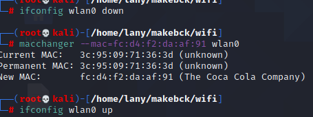

Interfaces de Red
Las interfaces de red permiten a cualquier servidor que ejecute el servicio enrutamiento y acceso remoto comunicarse con otros equipos a través de redes privadas o públicas.
Tarjetas de Red
La tarjeta de red, también conocida como placa de red, adaptador de red, adaptador LAN, Interfaz de red física.
Direccion IP Privada /Publica
IP Privada
Una dirección IP Privada se utiliza para identificar equipos o dispositivos dentro de una red doméstica o privada.
Las direcciones IP Privadas sí pueden repetirse pero en redes distintas, en cuyo caso no habrá conflictos debido a que las redes se encuentran separadas.
IP Publica
La dirección IP Pública es aquella que nos ofrece el proveedor de acceso a Internet y se asigna a cualquier equipo o dispositivo conectado de forma directa a Internet.
Las direcciones IP Públicas son siempre únicas.
Direccion MAC
Es un identificador de 48 bits (6 bloques de dos caracteres hexadecimales [8 bits]) que corresponde de forma única a una tarjeta o dispositivo de red.
En nuestro caso la direccion de la MAC sera cambiada.
Redes WPA/WPA2
Nota la tarjeta que se pondra de ejemplo es la interna de una laptop y es llamada en mi caso wlan0.
Configurando en Modo Monitor
1.Listar las interfaz de red existentes.
ifconfig
Kill procesos conflictivos
Killall dhclient wpa_suplicant 2>/dev/null
airmon-ng check kill
2.Habiendo matado los procesos seleccionar el nombre y configura en modo monitor con
airmon-ng start <wlan0 >

ifconfig
3.Observar que la interfaz seleccionada a desaparecido o ha cambiado.

4.Listamos la informa sobre la configuración de red inalámbrica iwconfig y observarmos que aparece nuestra interfaz seleccionada en modo monitor.

5.Configurado en modo monitor volvemos a levantar la interfaz ifconfig <wlan0> up
Deshabilitar modo monitor
Detenemos el modo monitor
airmon-ng stop <wlan0>
y verificamos.
ifconfig
Conectarse a la red de Internet
Es aconsejable reiniciar el servicio y reiniciar el computador.
/etc/init.d/networking restart
Cambiar nuestra direccion MAC
Macchanger
1.Revisamos cual es nuetra direccion MAC.
macchanger -s <wlan0> #-s=show
Los primeros tres bloques son importantes identifica la tecnologia del dispositivo.
2.Listamos OUI's.
macchanger -l | grep "P.."

3.Realizamos los cambios.
macchanger --mac=<oui selecionada>:da:af:91 <wlan0>

Nota : UAA puede ser aleatoria pero en Hexadecimal
Para cambiar la direccion de mac la interfaz en modo monitor debe estar detenida posteriormente la levantamos.

Airodump-ng
1.Tratamos de capturar teniendo nuestra interfaz levantada en modo monitor.
airodump-ng <wlan0>

Podemos Filtra puntos de acceso y clientes
BSSID direccion MAC del AP
PWR nivel de señal,-1 no hay señal
Beacons nro de packetes de anucios
#Data nro packetes capturados
#/s nro de paquetes de datos capturados por segundo calculando la media de los últimos 10 segundos.
CH Número de canal (obtenido de los “paquetes anuncio” o beacons).
CIPHER Tipos de cifrados
AUTH protocolo de autenticación usado.
ESSID Nombre de la red inalambrica
Modos de Filtro
Escogemos filtrar por el nombre de la red "ESSID" tambien llamada "SSID".
airodump-ng -c 1 --bssid F8:E8:11:1F:D3:68 <wlan0>
Guardando las redes.
Se adiciona el -w para capturar los datos es importante para un Handshake.

airodump-ng -c 10 -w captura --bssid <::::::> wlan0
Aireplay-ng
DesautenticacionSe trata de denegar los servicios (DoS),desautenticamos los packetes que debian ser injectados en la red mediante la prevencion de la coneccion del cliente al AP.
aireplay-ng -0 10 -e <E..L> -c < > wlan0
aireplay-ng -0 10 -e bssid -c FF:FF:FF:FF:FF:FF wlan0
Patrones
son sucesos recurrentes.
Paquetes?
Se tiene un proceso de Envio,esta pasa por capas que van encapsulando ,se adicionan a la cabecera de protocolo del Paquete.

Wireshark
Es una herramienta de analisis sobre paquetes.
¿Que es un IDS?
Son llamados los sistemas de Deteccion de Intruosos son herramientas,
estas aumentan la seguridad en las redes,estos por si solos no pueden detener a los intrusos ,necesitan tener una configuracion conjunta con el Firewall,para entender es una ids debemos saber que es un log.
¿Que es un log?
Es un registro que deja un sistema informativo,ejemplo: accesos de usuarios y borrados,puedes visalizarlos en /var/log en hay se encuentran todos los logs de Sistema .
Tipos de IDS
HIDS(Host IDS)
Deteccion basada en host de un maquina.
NIDS(Network IDS)
Monitoreo de la red
IPS
Sistema de Prevencion de Intrusion,ejerce el control de acceso a una red.
21/06/21
Intro üé§
Es un Search Engine como google o big pero puede brindarnos informacion
de puertos ,controladores ,lugares publicos los cuales tal vez se descubran vunerabilidades en ellas.
Shodan brinda informacion de de todo aparato conectado a un red como una pc hasta un controlador de una empresa.
Aplicacion üîç
Seguridad de redes
Es utilizado para investigaciones de Seguridad.
Investigacion de Mercado
El proposito de Shodan al comienzo fue del ser un motor de Market Research por que este es muy distinto a los demas como google ,¿Está encontrando computadoras que ejecutan una determinada pieza de software (como Apache)? ¿O si desea saber qué versión de Microsoft IIS es la más popular? ¿O quiere ver cuántos servidores FTP anónimos hay? ¿Quizás surgió una nueva vulnerabilidad y desea ver cuántos hosts podría infectar? Los motores de búsqueda web tradicionales no le permiten responder esas preguntas ".
Internet de las Cosas
Aparte de la webcam existen otros aparatos que deberian tener normas de regulacion para la seguridad de los propietarios. Mirando a niños que duermen
Inspeccion de Ransomware
Shodan tambien esta del lado el bien. Shodan tumba una red de `bots´
Ciber Risk
Exponiendo a sistemas de Industrias
TOP en Busquedas üÜí
- Webcam
- Cams
- Netcam
- Defaultpassword
- Ufanet
*:80;*:8080;
- Dreambox
- Live sex cam
- Webcamxp
- Webcam no pass
- MayGion IP cameras (admin:admin)